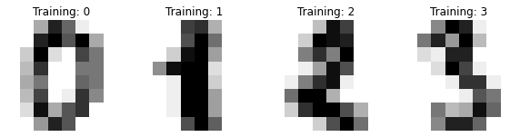

Reproducing arXiv:2108.01039 with scikit-qulacs#
# This part is taken from https://scikit-learn.org/stable/auto_examples/classification/plot_digits_classification.html
# Author: Gael Varoquaux <gael dot varoquaux at normalesup dot org>
# License: BSD 3 clause
# Standard scientific Python imports
import matplotlib.pyplot as plt
# Import datasets, classifiers and performance metrics
from sklearn import datasets, svm, metrics
from sklearn.model_selection import train_test_split
digits = datasets.load_digits()
_, axes = plt.subplots(nrows=1, ncols=4, figsize=(10, 3))
for ax, image, label in zip(axes, digits.images, digits.target):
ax.set_axis_off()
ax.imshow(image, cmap=plt.cm.gray_r, interpolation="nearest")
ax.set_title("Training: %i" % label)

Prepare dataset#
Flatten images to make them 1-dimenstional vectors and split the dataset into test and trainign
# flatten the images
n_samples = len(digits.images)
data = digits.images.reshape((n_samples, -1))
# split them into test and train
X_train, X_test, y_train, y_test = train_test_split(
data, digits.target, train_size=0.72, shuffle=True
)
Prepare an NPQC ansatz#
Create circuit from pre-defined set. scikit-qulacs can create the ansatz called NPQC ansatz in arXiv:2108.01039.
from skqulacs.qsvm import QSVC
from skqulacs.circuit import create_npqc_ansatz
n_qubit = 8
n_layers = 8
c = 0.035 # hyperparameter determining the kernel sharpness for the NPQC ansatz
circuit = create_npqc_ansatz(n_qubit, 8, c)
Kernel SVM using the ansatz#
Train the kernel support vector machine and make prediction
from skqulacs.qsvm import QSVC
from skqulacs.circuit import create_npqc_ansatz
clf = QSVC(circuit)
clf.fit(X_train, y_train)
predicted = clf.predict(X_test)
from sklearn.metrics import accuracy_score
print("test accuracy is:", accuracy_score(y_test, predicted))
test accuracy is: 0.9722222222222222
Showing results#
See image and prediction for some of the test data
_, axes = plt.subplots(nrows=1, ncols=7, figsize=(10, 3))
for ax, image, prediction in zip(axes, X_test, predicted):
ax.set_axis_off()
image = image.reshape(8, 8)
ax.imshow(image, cmap=plt.cm.gray_r, interpolation="nearest")
ax.set_title(f"Prediction: {prediction}")
Confusion matrix
disp = metrics.ConfusionMatrixDisplay.from_predictions(y_test, predicted)
disp.figure_.suptitle("Confusion Matrix")
plt.show()
Reproduce Fig. 4(a) of arXiv:2108.01039#
We vary the training dataset size and see how the test accuracy changes. The code below takes some time to execute.
from skqulacs.qsvm import QSVC
from skqulacs.circuit import create_npqc_ansatz
from sklearn.metrics import accuracy_score
acc_list=[]
for trainsize in range(100,1501,100):
acc_list.append(0.0)
n_qubit=8
circuit = create_npqc_ansatz(n_qubit,8,0.035)
clf = QSVC(circuit)
X_train, X_test, y_train, y_test = train_test_split(
data, digits.target, train_size=trainsize, shuffle=True
)
clf.fit(X_train, y_train)
predicted = clf.predict(X_test)
acc_list[-1]=accuracy_score(y_test, predicted)
plt.plot(range(100,1501,100),acc_list)
plt.xlabel("Training dataset size")
plt.ylabel("Test accuracy")
plt.ylim(0.8,1.0)
plt.show()